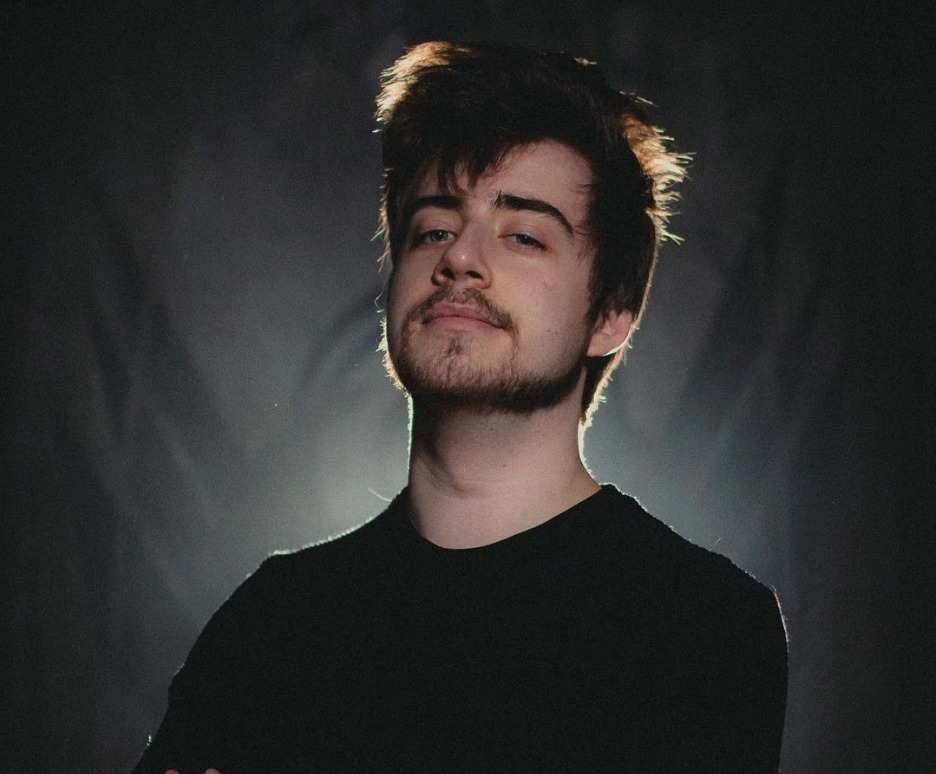

Um RPG é um jogo de interpretação de papéis no qual os jogadores assumem personagens fictícios e participam de uma história imaginária.
Eles tomam decisões e conduzem ações dentro de um ambiente guiado por regras.
O jogo promove a colaboração entre os jogadores, permitindo que eles explorem mundos imaginários e vivenciem aventuras em conjunto.
Ordem Paranormal RPG é um projeto criado pelo streamer brasileiro Rafael Lange,
também conhecido como Cellbit.
Seu primeiro episódio foi ao ar em 29 de fevereiro de 2020, em seu canal da Twitch.
Em Ordem Paranormal, Cellbit assume o papel de mestre do jogo, guiando os jogadores por uma história repleta de mistérios e desafios.
A trama gira em torno de um grupo de personagens que faz parte de uma organização chamada Ordo Realitas,
responsável por investigar fenômenos sobrenaturais e lidar com ameaças do outro lado da membrana.
Durante as transmissões ao vivo, Cellbit e os outros jogadores interpretam seus respectivos personagens, criando
diálogos e tomando decisões que afetam diretamente o desenvolvimento da história.
Em alguns casos, os espectadores têm a oportunidade de acompanhar a narrativa, interagir por meio do chat e,
em alguns casos, até mesmo influenciar indiretamente o desenrolar do jogo.
A atmosfera sombria e misteriosa contribui para a imersão dos jogadores e espectadores, tornando a experiência mais envolvente.
Esse projeto se destaca por sua produção de alta qualidade, com um cuidado especial na construção dos cenários,
efeitos sonoros e trilha sonora,
além de itens como camisas, moletons e até mesmo um livro de regras feito pelo próprio criador.

A "série" se passa em um universo onde existem duas dimensões: o Normal e o Paranormal.
O Normal é onde vivemos como humanos, enquanto o Paranormal é um lugar completamente diferente, onde tudo que parece impossível pode se tornar
real, o que normalmente estaria associado a espíritos, demônios e outros tipos de anormalidades ligadas à vida após a morte.
Esses dois locais são separados por uma camada chamada de Membrana, que impede que o Normal e o Paranormal entrem em contato.
No entanto, essa membrana pode se enfraquecer com o aumento do medo do sobrenatural,
permitindo que monstros horrendos e muito perigosos invadam nossa realidade.
Esse fenômeno geralmente ocorre em locais específicos propensos à percepção do medo, como hospitais abandonados, casas antigas e sanatórios desativados.
Ao redor do mundo, vários grupos se formaram com o objetivo de enfraquecer a Membrana o máximo possível, a fim de destruí-la e promover a fusão das dimensões,
buscando seus próprios desejos ou, talvez, cumprindo um propósito maior.
Os membros desses grupos são chamados de Ocultistas (no início do RPG, Esoterroristas).
Para evitar que o caos se instale, uma organização global secreta foi criada:
a Ordo Realitas ("Ordem da Realidade", naquela época chamada de Ordo Veritatis, "Ordem da Verdade").
Pessoas comuns levam vidas duplas para impedir os atos dos Ocultistas, cujo objetivo é aumentar o contato da população com o paranormal,
intensificando seu medo e, consequentemente, enfraquecendo a membrana e permitindo a interferência do paranormal.